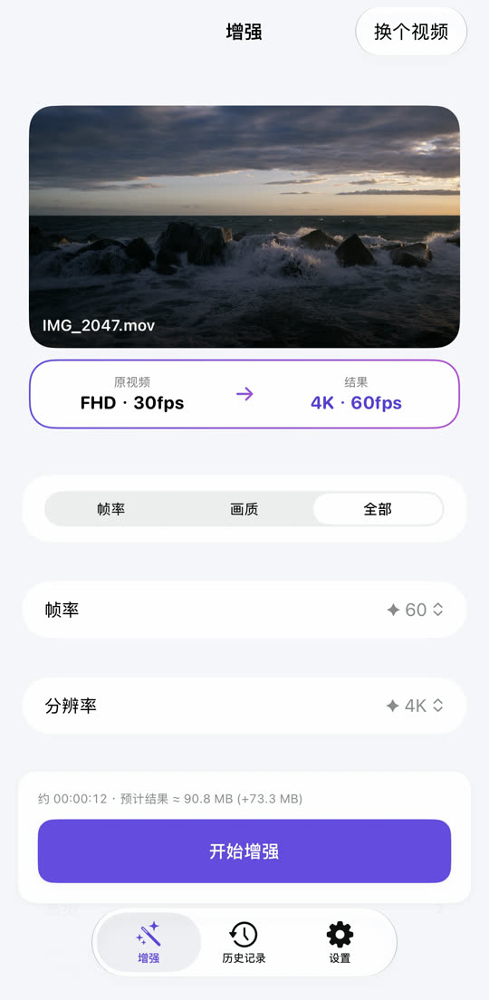
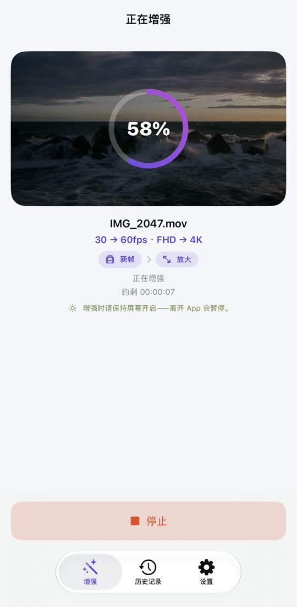
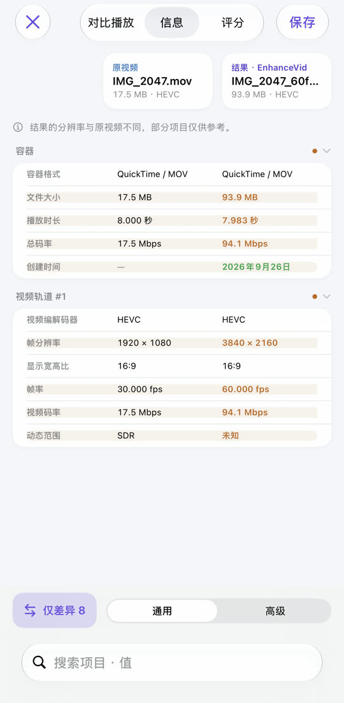

EnhanceVid
卡顿的视频变流畅，
模糊的视频变清晰。
30fps 变 60fps，全高清变 4K。在原始帧之间生成新帧，并提高分辨率让画面更清晰——所有处理都在你的 iPhone 上完成，原视频保持不变，结果另存为新视频。
在 App Store 下载免费 · iOS 26 或更高版本 · iPhone · iPad · Apple 芯片 Mac

告别模糊，细节更清晰。
使用 Apple MetalFX 放大提高分辨率。左右拖动中间的线来对比。

 原视频增强后
原视频增强后
⇆
示例图片——低分辨率原图放大后的效果与增强后的效果并排展示。
卡顿的动作，变得顺滑。
在原始帧之间计算并插入新帧。场景切换处不会强行混合，不会出现不自然的残影。
30fps
60fps
为便于看出差别，这里夸大了动作。
选择、开始、对比、保存。


所需功能，一应俱全。
降噪
让暗光下拍摄的噪点视频变干净。在支持的设备上可用。
升降自由
4K 60fps 转 30fps，4K 转全高清——也可以降低。
亲眼对比
并排播放、参数表、画质评分（PSNR、SSIM，可选 VMAF）。
HDR 保持不变
iPhone 拍摄的 HDR、杜比视界视频，结果仍是 HDR。
多种文件
照片图库与“文件”App 中的视频，也支持 MKV、WebM、AVI。
原视频不变
结果另存为新视频，不会修改或删除原视频。
你的视频只留在你的设备上
不会上传任何视频，也无需账户。免费，由广告支持—— 隐私